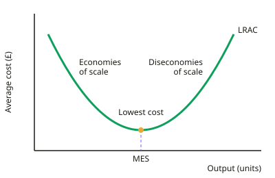

A-level Business Year 12 · Topic 3
The external environment, ethics and business growth
This topic looks outside the business, at the economy, the law, society, technology and competition.
We also look at how big a business is, the different ways it can grow, and the ethical responsibilities that come with size.
The key skill is judging how much each external change matters for a particular business.
- 7 subtopics
- 255 questions
- Free: 3.1 notes and 10 questions
In this topic
- 3.1Business size: measures of size, why firms stay small and the implications of growthFree below · 19 questions
- 3.2Methods of growth: organic growth, mergers, takeovers, demergers and joint venturesOpen in Full Marks · 29 questions
- 3.3Economic influences: interest rates, exchange rates, inflation, unemployment, taxation, economic growth and the business cycleOpen in Full Marks · 56 questions
- 3.4Legislation and regulation: consumer, employment, health and safety, competition, data protection and environmental lawOpen in Full Marks · 65 questions
- 3.5Social, technological and environmental influences on business (PESTLE)Open in Full Marks · 27 questions
- 3.6The competitive environment and competitive advantageOpen in Full Marks · 30 questions
- 3.7Business ethics, corporate social responsibility and sustainabilityOpen in Full Marks · 29 questions
3.1 · Free notes
Business size: measures of size, why firms stay small and the implications of growth

Key points
- Size can be measured by number of employees, revenue (sales turnover), market share, capital employed, profit or number of outlets. No single measure is perfect, so use more than one.
- Market share (%) = firm's sales ÷ total market sales × 100. It depends on how narrowly the market is defined, so a firm can look big in a niche market but small overall.
- Limitations of each measure: employees mislead for capital-intensive (automated) firms. Revenue ignores profitability and is distorted by price changes. Capital employed depends on accounting valuations.
- Reasons firms stay small: a niche market, owners wanting to keep control, lack of finance, a personal service offer, avoiding diseconomies of scale, risk aversion or a lifestyle business.
- Small-firm strengths are flexibility, fast decisions, close customer relationships and low overheads. Weaknesses are weak bargaining power, higher unit costs and difficulty raising finance.
- Growth can bring economies of scale, where average cost (unit cost = total cost ÷ output) falls as output rises. Types: purchasing (bulk discounts), technical, financial (cheaper loans), managerial (specialists) and marketing.
- If output doubles but total cost less than doubles, unit cost falls and there are economies of scale. Use real figures in calculations, e.g. £500,000 ÷ 20,000 units = £25 per unit.
- Growth beyond the minimum efficient scale (MES) can cause diseconomies of scale. Poor communication, slow decisions, weak coordination and lower motivation raise unit costs.
- Other implications of growth: more finance is needed, the structure changes (more layers, delegation), and issuing shares can dilute owners' control and create a divorce of ownership and control.
- Rapid growth risks overtrading (sales growing faster than working capital), which causes cash-flow problems. Objectives may shift from survival to profit or market share.
- Evaluation: whether to grow depends on the owners' objectives, market size, access to finance and management capability. Bigger is not always more profitable.
In more detail
- Different measures, different answers: an online bank may have huge revenue but few staff, while a care home chain has many staff but modest revenue, so always say which measure you are using.
- Worked economies of scale: total cost £40,000 for 10,000 units (AC £4) → total cost £70,000 for 20,000 units (AC £3.50), so unit cost falls by 12.5%.
- UK size bands: a small business usually has fewer than 50 employees and a medium-sized business fewer than 250.
- Staying small by choice: a top restaurant may limit its number of tables to protect quality and keep the owner in personal control.
Practice
Business size: measures of size, why firms stay small and the implications of growth: 10 questions
Pick an answer to check it, or open the answer for the explanation.
1. A firm has annual sales of £6m in a market worth £40m. What is its market share?
- 6.7%
- 15%
- 25%
- 6%
Show answer
B: 15%. Market share = firm sales ÷ market sales × 100 = 6 ÷ 40 × 100 = 15%.
2. Firm A has 40 employees and £2m revenue. Firm B has 15 employees and £3m revenue. Which statement is correct?
- A is larger by employees; B is larger by revenue
- A is larger on both measures
- B is larger on both measures
- B is larger by employees; A is larger by revenue
Show answer
A: A is larger by employees; B is larger by revenue. A has more employees (40 v 15) but B has higher revenue (£3m v £2m). Different measures can rank firms differently.
3. Which is the most likely reason a family-owned restaurant chooses to remain small?
- Small firms can always achieve economies of scale
- The owners want to keep control and a personal service
- Small firms have greater purchasing power
- Banks lend more readily to small firms
Show answer
B: The owners want to keep control and a personal service. Keeping control and offering personal service are classic motives for staying small. The other statements are generally untrue of small firms.
4. Which is an example of a diseconomy of scale?
- Slower decisions as more management layers are added
- Quantity discounts from suppliers
- Spreading advertising costs over more sales
- Cheaper loans from banks
Show answer
A: Slower decisions as more management layers are added. Longer chains of command slow communication and decision making, raising unit costs. The other options are economies of scale.
5. Total costs rise from £500,000 at 20,000 units to £840,000 at 40,000 units. What happens to average cost?
- Rises from £21 to £25: diseconomies of scale
- Falls from £25 to £12.50: economies of scale
- Stays at £25: constant returns to scale
- Falls from £25 to £21: economies of scale
Show answer
D: Falls from £25 to £21: economies of scale. AC = TC ÷ output: £500,000 ÷ 20,000 = £25; £840,000 ÷ 40,000 = £21. Unit cost falls, so there are economies of scale.
6. A retailer gets a 10% discount for ordering far larger quantities. This is which type of economy of scale?
- Purchasing
- Technical
- Managerial
- Financial
Show answer
A: Purchasing. Bulk-buying discounts from suppliers are purchasing (buying) economies of scale.
7. A founder floats the firm on the stock exchange to fund growth. Which implication is most likely?
- The founder gains full control
- Fixed costs fall to zero
- Corporation tax is no longer paid
- Ownership and control may become separated
Show answer
D: Ownership and control may become separated. Selling shares to outsiders dilutes the founder's ownership and can create a divorce of ownership and control between shareholders and managers.
8. Which is a limitation of using revenue to measure business size?
- It ignores profitability and is affected by price changes
- It is always less than profit
- It counts only staff numbers
- It cannot be calculated for plcs
Show answer
A: It ignores profitability and is affected by price changes. Revenue = price × quantity, so it can rise through price increases and says nothing about profit or costs.
9. A small bakery with loyal local customers is considering a national chain. Which is a likely advantage of staying small?
- Greater ability to offer a personal, flexible service
- Easier access to share capital
- Spreading fixed costs over more output
- Larger bargaining power with suppliers
Show answer
A: Greater ability to offer a personal, flexible service. Small firms can offer personal, flexible service and respond quickly. The other options are advantages of larger firms.
10. Which is a financial economy of scale?
- Cheaper adverts per customer
- Using bigger, more efficient machines
- Borrowing at lower interest rates
- Employing specialist managers
Show answer
C: Borrowing at lower interest rates. Lenders see large firms as lower risk, so they can borrow more cheaply. The others are technical, managerial and marketing economies.
Keep going in Full Marks
Full Marks has 19 questions on Business size: measures of size, why firms stay small and the implications of growth (9 more than here), set out in practice levels. You also get notes and 3D models for all 7 subtopics of The external environment, ethics and business growth, plus games, timed exams and past papers.